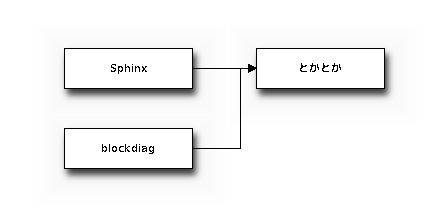

インタラクティブなblockdiagもあるよ。
こんな画が書けるよ!!

conf.py にフォントファイルのパスを追記。
# Fontpath for blockdiag (truetype font)
blockdiag_fontpath = r'c:\usr\fonts\MigMix-1P-bold.ttf'
# Fontpath for blockdiag (truetype font)
nwdiag_fontpath = r'c:\usr\fonts\MigMix-1P-bold.ttf'
フォントファイルは今回MigMixを使いました。
Python Imaging Library (PIL)サイトのWindowsのバイナリを インストールして使う場合には、バージョン 1.1.6 を選びましょう。 FreeType2サポートが1.1.7には組み込まれていないとか。